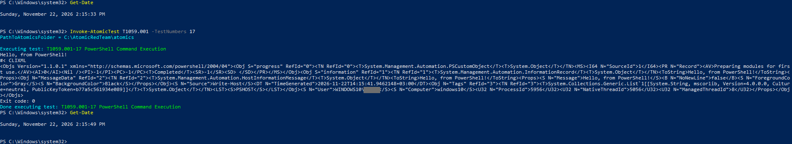
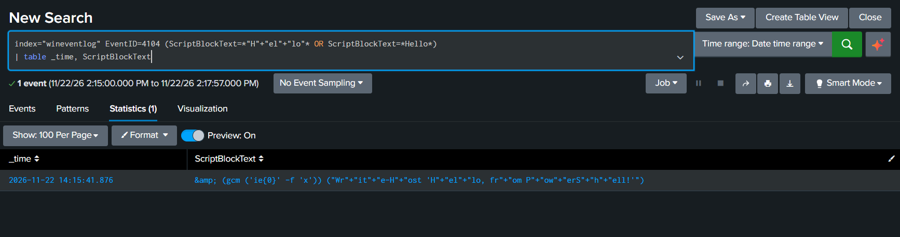

02 · Encoded PowerShell
powershell.exe started with a Base64-encoded command (-EncodedCommand and its abbreviations).
Attack
Invoke-AtomicTest T1059.001 -TestNumbers 17
# Repeat test, different spelling
powershell.exe -enc VwByAGkAdABlAC0ASABvAHMAdAAgACcAdABlAGsAcgBhAHIAIAB0AGUAcwB0AGkAJwA=Detection (SPL)
First broad search (203 events)
index=sysmon EventID=1 (CommandLine=*/e* OR CommandLine=*-e*)
| table _time, Image, ParentImage, process_id, ParentProcessId, CommandLineFinal version (1 event)
index=sysmon EventID=1 Image=*\\powershell.exe CommandLine IN ("*-e *", "*-ec *", "*-en *", "*-enc *", "*-EncodedCommand *")
| table _time, Image, ParentImage, process_id, ParentProcessId, CommandLineDecoded content from 4104
index="wineventlog" EventID=4104 ScriptBlockText=*Hello*
| table _time, ScriptBlockTextFalse positives and tuning
My first query (CommandLine=*-e*) returned 203 events over the last 7 days. At first I thought I had written the query wrong. Then I realized the query worked; it was just too broad. Most of the results were OneDrive's FileCoAuth.exe and other parameters starting with -e. Limiting the search to powershell.exe left 11 events. But some of them didn't contain -e at all: my own PowerShell window and scripts run by Windows telemetry (CompatTelRunner.exe).
Fixes
The cause of those 11 events was quoting. Without quotes, *-e * was split at the space, and the lone * matched everything. Putting the values in double quotes brought the result down to 1 event: only the test. I was really relieved when I noticed this, because a small detail like this could have led me to wrong decisions. I also left a space after the parameter so that other parameters starting with -e, such as -ExecutionPolicy, don't match.
Screenshots

cmd.exe /c powershell.exe -e <Base64>.
FileCoAuth.exe and every parameter starting with -e.
iex is hidden with 'ie{0}' -f 'x'.

-e) and the repeat test (-enc) were caught, nothing else.Test evidence
| Test | Time (VM clock) | Result |
|---|---|---|
T1059.001-17 (-e) | 2026-11-22 14:15:41.685 | Caught (PID 5956) |
Manual -enc | 2026-11-22 15:40:55.382 | Caught (PID 312) |
Lesson learned
The command line only showed Base64. 4104, however, logged the command at every layer, and the last layer had it in plain text: Write-Host 'Hello, from PowerShell!'. Without that plain text, searching for it in a query would have been really hard.
My main lesson: write the query by thinking of every way an attacker could type the same command. -e, -ec, -en, -enc and -EncodedCommand are in the list. But spellings like /e and -enco, and PowerShell 7 (pwsh.exe), are still left out.
Full details (data sources, limitations, analyst next steps; in Turkish): detections/02-sifreli-powershell.md